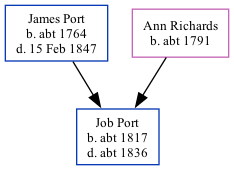

Job Port c1817 - c1836
[ Home ] | [ Calendar ] | [ Surnames Index ] | [ Family History ]The child of James Port and Ann Richards, Job Port, the four times great-uncle of Nigel Horne, was born c. 1817 and baptized in Herne, Kent, England on Oct 12, 1817.
He died c. 18361 and was buried at St Martin in Herne on Feb 23, 18362.
Parents
- James was born c. 1764
- Ann was born c. 1791
Citations
- East Kent Burial Index - Findmypast
- Kent Burials - Findmypast
Media
England Births & Baptisms 1538-1975 - R_884302951
Kent Baptisms - GBPRS/CANT/B/96125102
Kent Burials - GBPRS/CANT/D/95088653
East Kent Burial Index - GBPRS/D/407089441/1
Family Tree
Generated by Ged2Site. Last updated on Jul 20, 2025